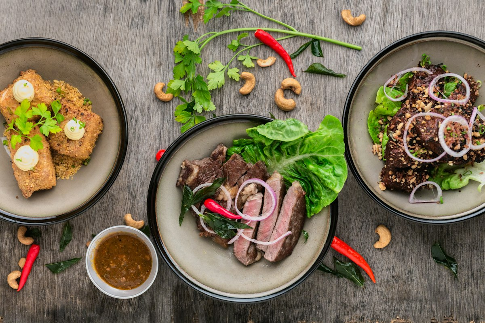

مكونات تستاهل
بنختار مكونات سهلة وموجودة، وبندور على التوازن قبل الكمية. الطعم الحقيقي بييجي من حاجة بسيطة معمولة صح.
دي مكان للوصفة اللي بتتعمل على مهل، وللقعدة اللي بتطول شوية بعد الأكل. بنكتب الطبخ زي ما بنحكيه لصاحبنا: ببساطة، وصدق، ومن غير تعقيد.

كتير من الوصفات بتفترض إنك عارف كل حاجة، أو بتخليك تقرأ صفحة كاملة قبل ما تعرف كمية الملح. إحنا عايزين العكس: مكونات واضحة، خطوات تقدر تمشي عليها وانت واقف في المطبخ، ونتيجة تستاهل.
كل وصفة هنا بتتعمل أكتر من مرة قبل ما تنشر. بنظبط الكميات، وبنكتب الخطوة اللي فعلًا بتفرق، وبنقولك إيه اللي ممكن يتغير من غير ما الطبق يبوظ.
«المطبخ مش مكان للمثالية. هو مكان للتجربة، وللطعم اللي بيفكرّك بالبيت.»
— فريق سُفرةمش شروط على الوصفة، قد ما هي طريقة تفكير بتخلي الطبخ أهدى وأبسط.
بنختار مكونات سهلة وموجودة، وبندور على التوازن قبل الكمية. الطعم الحقيقي بييجي من حاجة بسيطة معمولة صح.
كل خطوة مكتوبة زي ما إحنا بنعملها. مفيش «حتى ينضج» من غير وقت، ولا خطوة مخبّية بتفرق في النتيجة.
وصفات تنفع لمطبخ صغير ووقت مش طويل. بتتظبط حسب عدد الأفراد، وبتفضل واضحة سواء كنت مبتدئ أو بتطبخ من زمان.
أيوه. كل وصفة بتتعمل في مطبخ البيت أكتر من مرة، وبنعدّل الكميات والخطوات لحد ما تطلع ثابتة وواضحة. لو حاجة بتتغير حسب المتاح، بنقولها في النصيحة.
في صفحة كل وصفة فيه زرار + و − فوق المكونات. لما تغيّر العدد، الكميات بتتظبط تلقائيًا. الكميات اللي ملهاش مقياس زي «رشة ملح» بتفضل زي ما هي، وبتتقدّر على مزاجك.
وضع بيخلي الشاشة كبيرة وتعرض خطوة واحدة في المرة، مع مؤقت وزر للخطوة اللي بعدها. مفيد لما تكون إيدك مشغولة ومحتاج تشوف الخطوة من بعيد.
أيوه، المحفوظات بتتخزن على جهازك في المتصفح. مش محتاجة حساب، وبتفضل موجودة طول ما بتستخدم نفس المتصفح ونفس الجهاز.
ينفع، وبنحب ده. من قسم التواصل تحت، ابعت اسم الوصفة، صورة واضحة للطبق، والمكونات والخطوات. لو الوصفة مناسبة للسفرة، هنراجعها وننشرها باسمك.
ابعتلنا وصفتك أو اقتراحك. بنقرأ كل حاجة، وبنرد على اللي نقدر نساعد فيه. لو بتبعت وصفة، اكتب لنا المصدر لو مش من عندك.
الرسائل بتوصل من خلال صفحة GitHub. لو مش عندك حساب، ممكن تبعت من أي حساب لصاحبك.